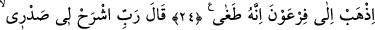
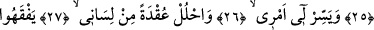
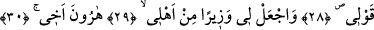
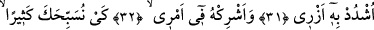
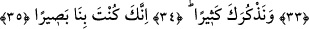

YÜREĞİME GENİŞLİK VER –
İŞİMİ KOLAYLAŞTIR
24. Fir’avn’a git. Çünkü o iyice azdı.
25. Mûsâ dedi ki: Rabbim!, yüreğime genişlik ver.
26. İşimi bana kolaylaştır.
27. Dilimden (şu) bağı çöz.
28. Ki sözümü anlasınlar.
29. Bana ailemden bir de vezir (yardımcı) ver,
30. Kardeşim Hârun’u.
31. Onun sayesinde arkamı kuvvetlendir.
32. Ve onu işime ortak kıl.
33. Böylece seni bol bol tesbih edelim.
34. Ve seni çok çok analım.
35. Şüphesiz sen bizi görmektesin.
Ey Mûsâ, dînine dâvet ve kötülükten korkutmak için “Fir’avn’a” ve âvânesine, asâ
ve el mûcizesi ile “git.” Çünkü Kasas sûresinde: “İşte bu ikisi, Fir’avn ve onun
adamlarına karşı Rabbin tarafından iki kesin delildir.” (el-Kasas, 28/32)
buyrulmuştur. “Sen ve kardeşin birlikte âyetlerimi (mûcizelerimi) götürün.” (Tâhâ,
20/42) âyetinde “âyetler (mûcizeler)” kelimesinin çoğul olması daha sonra
açıklanacaktır.
“Çünkü o iyice azdı.” yâni Fir’avn, Allah’la ortak olarak bile değil, müstakil olarak
rablik iddiâsıyla ubûdiyyetin sınırlarını çiğnedi. Nitekim Fir’avn: “Ben sizin en yüce
Rabbinizim.” (en-Nâziât, 79/24) demiştir.
Bu âyette iki mânâya işâret vardır: İlki, sâdık sâlik, kemâl mertebesine ulaştığı zaman
Allah onu kullarına yol göstermek ve terbiye etmekle görevlendirir. İkinci olarak ise
erenlerin kemâli, tekrar halka dönmelerinde, onlara karışıp ezâ ve cefâlarına
sabretmelerindedir. Böylece kendi hilim ve affediciliklerini denemiş olurlar.
Eğer “Mûsâ (a.s.) niçin asâ ile gönderildi?”diye sorulursa, şöyle derim: Asâ